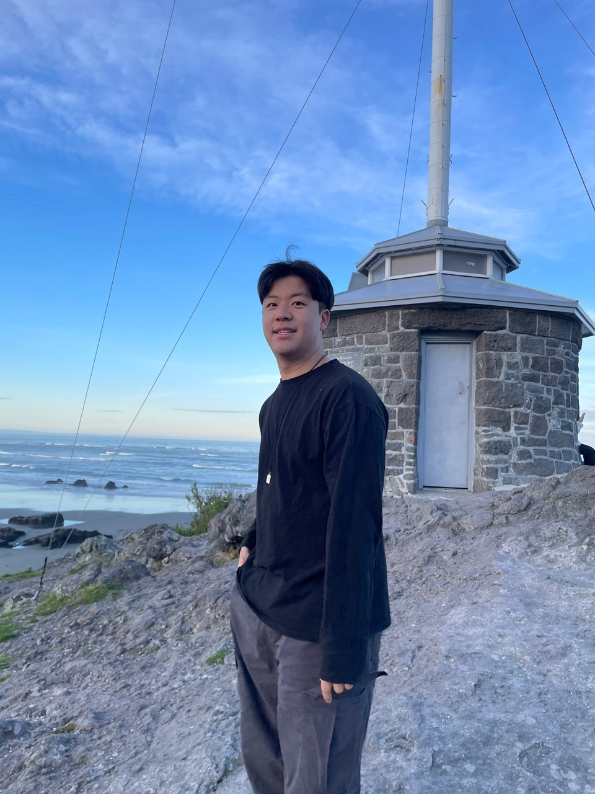

Seoul National University
Ph.D. in Biomedical Engineering

About
Education
Korea University
M.S. in Computer Science and Engineering
Korea University
B.S. in Mechanical Engineering
Research experience
Seoul National University
Brain–computer interfaces and biocomputing
Korea Institute of Science and Technology
Signal processing
Korea University
VR, cybersickness, and HCI
Selected publications
* co-first authors
- 2026Trunk Motion Reflects Center-of-Pressure Dynamics and Supports Markerless Single-Camera Postural Sway Assessment
Y. Yang*, E. Chang*, and B. Yoo
Scientific ReportsIF 4.9 · Q1 · 2025 JCR
- 2026
1-D Collocated Dual-Gradient Sensory Fibers for Comprehensive Sensing and Decoding of Complex Human Motion and Physiology
Y. Lee*, S. Jeon*, M. Kim*, J. Won, J. Yeo, K. Jo, S. Lee, K. Park, Y. Yang, et al.
Advanced MaterialsIF 29.1 · Q1 · 2025 JCR
- 2026JourneyVR: Designing for Continuous Workflow Experience in Virtual Reality
M. Kim, J. Ryu*, Y. Yang*, and G. Kim
CHI 2026Top 1% HCI conference
- 2025Effects of Mini-Map Usage and Spatial Ability on Cybersickness in Virtual Reality Navigation
Y. Yang*, J. Park, G. Kim, and H. Kim
International Journal of Human–Computer InteractionIF 4.9 · Q1 · 2024 JCR
- 2025StreamSplat: A Hybrid Client-Server Architecture for Neural Graphics using Depth-based Fusion on the Web
S. Park*, Y. Yang*, M. Kim, and B. Yoo
Web3D 2025Best Paper Award
- 2025The Impact of Observer Presence on Trainees’ Mental States and Performance in Remote Military Training with Virtual Humans in Mixed Reality
J. Park, Y. Yang, G. Kim, and H. Kim
 CHI 2025Top 1% HCI conference
CHI 2025Top 1% HCI conference - 2025BalanceVR: VR-Based Balance Training to Increase Tolerance to VR Sickness
Y. Yang*, S. Kang*, M. Kim, G. Kim, and H. Kim
Virtual RealityIF 5.0 · Q1 · 2024 JCR
- 2024RPG: Rotation Technique in VR Locomotion Using Peripheral Gaze
J. Lee, H. Kim, Y. Yang, and G. Kim
ETRA 2024
Conference posters 5
JourneyVR · ISMAR
u-DFOV · IEEE VR
PianoFMS · IEEE VR
Customized Strategies for Reducing VR Sickness · VRST
FakeBand · IEEE VR
Recent updates
Selected for the Doctoral Excellence Scholarship (STEM) from the Korea Student Aid Foundation.
Received the Minister of Health and Welfare Award (1st place) at the 7th NRC Assistive Device Hackathon.
Selected as an SNU Grand Quest Maker.
Presented JourneyVR at CHI 2026.
Started my Ph.D. in Biomedical Engineering at Seoul National University.
Our mini-map and cybersickness study was accepted by the International Journal of Human–Computer Interaction.
StreamSplat received the Best Paper Award at Web3D 2025.
Earlier updates 6
Presented our mixed-reality military training study at CHI 2025.
BalanceVR was accepted by Virtual Reality.
Joined KIST as a research assistant.
Completed my M.S. thesis on mini-map use, spatial ability, and cybersickness.
Presented RPG at ETRA 2024.
BalanceVR received an Outstanding Research Award from the Korea Electronics Association.